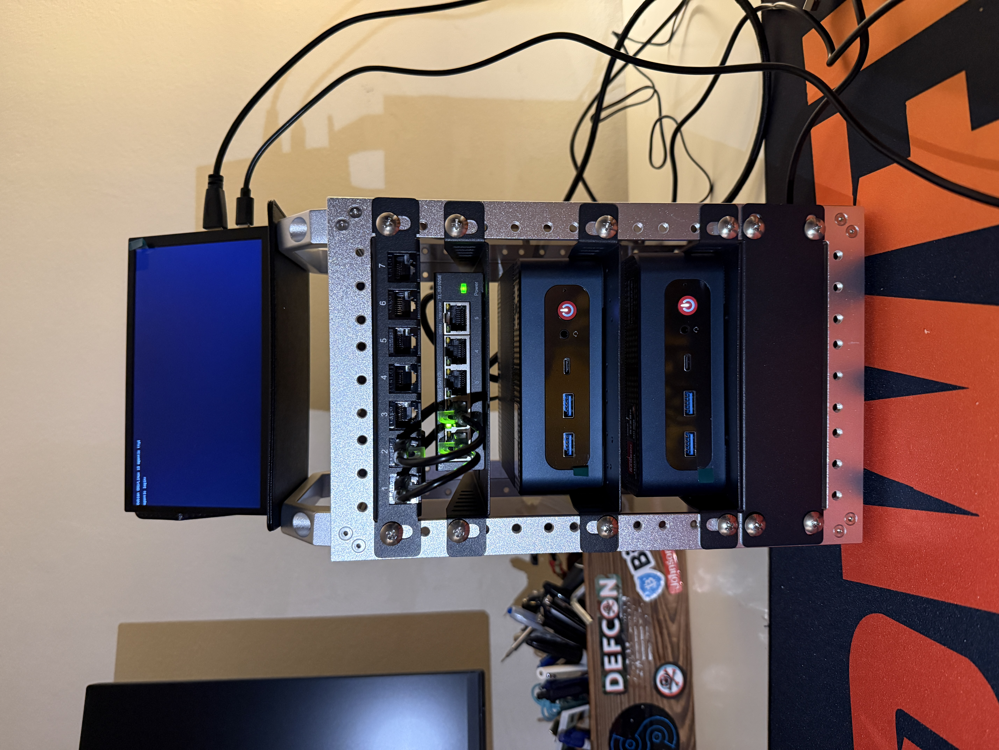
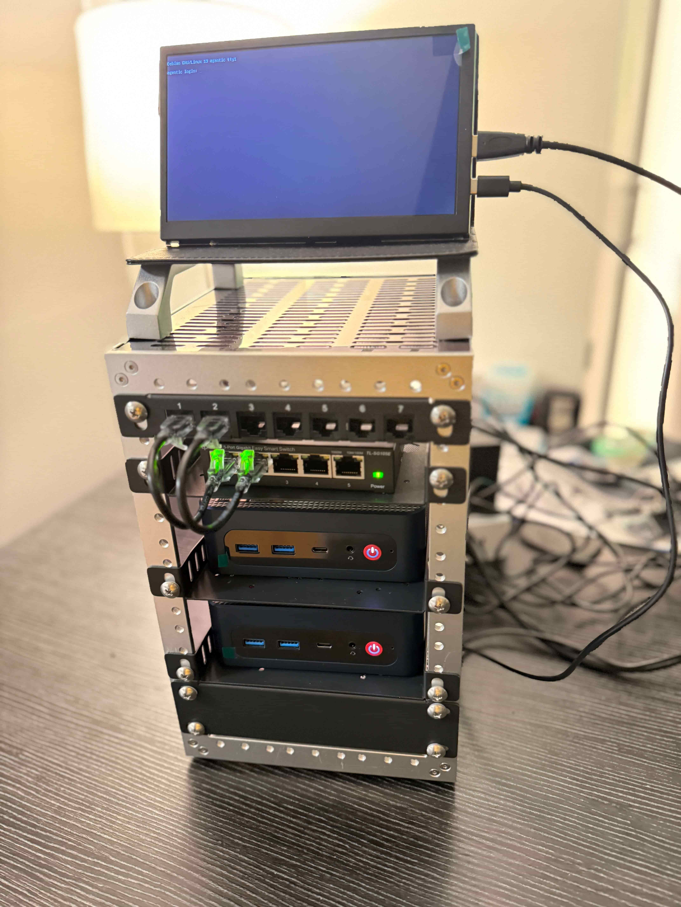
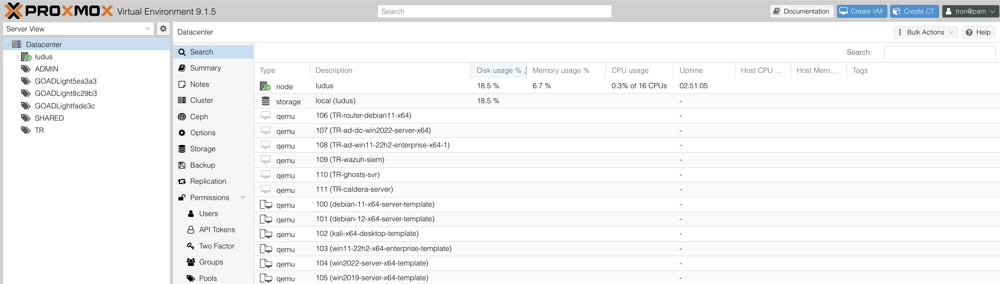
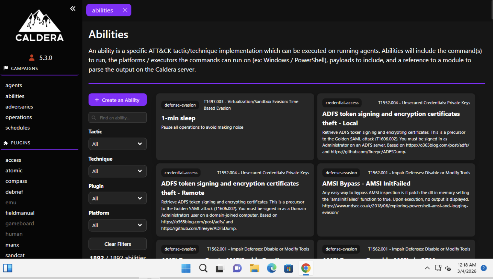
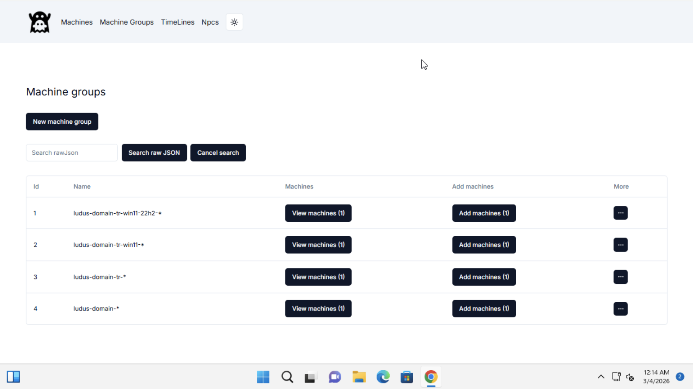

Building My First Security Lab (Part 1)
Note: This is Part 1 of a three-part series. In this post, I’ll cover the hardware and infrastructure build of my home lab. In Part 2, we’ll dive into how I built an AI-powered Tier 1 Analyst. Lastly, in Part 3, I bring everything together and put the agent to the test.
TL;DR
The goal of this lab was to explore how an AI-driven agent could augment security operations. By building an experimental agent, I tested whether it could support alert triage, ingesting security telemetry, reducing false positives, and surfacing high-fidelity findings that actually require human investigation.

Why Build a Security Lab?
It’s the ultimate "sandbox", a risk-free environment where you can build, break, and rebuild systems to understand how they actually work under the hood. For me, this lab was about bridging the gap between theoretical knowledge and hands-on proficiency.
Learning through Trial and Error In a professional setting, there's rarely room to "break things" just to see what happens. This lab was my chance to bridge that gap. It became a personal sandbox where I could misconfigure a firewall, detonate a test script, and see exactly how those mistakes translate into logs. Developing that kind of troubleshooting intuition is exactly why I wanted to dive into this project, it's where the theory starts making sense.
The Hardware: Building My Mini Server Rack
To make this vision a reality, I needed a hardware setup that was both powerful and organized. I decided to build my own custom mini server rack to house the infrastructure. This wasn't just about aesthetics; it was about creating a modular, high-performance environment that could handle the simultaneous demands of a virtualized Active Directory environment.
The Rack Specs:
- Compute: Two mini PCs, both an AMD Ryzen 7 6800H (8C/16T).
- Memory & Storage: 32GB DDR5 RAM and 1TB NVMe SSD.
- Networking: A dedicated managed switch for VLAN isolation, ensuring lab traffic stays separate from my home network.
- Console: A mini-display for direct management and monitoring.

Building the Cyber Range
Building a lab from scratch is where the theory finally meets reality. For this setup, I used Proxmox as the underlying hypervisor and Ludus to manage the "Range-as-Code".
Why Ludus?
Ludus is a free, open-source, and automated cyber range platform designed to build, manage, and tear down virtualized, on-premise, or cloud-hosted cybersecurity test environments. Built on top of Proxmox and leveraging Ansible and Packer, it allows you to quickly deploy complex, realistic networks—such as Active Directory labs—using a single YAML configuration file.
For this specific project, I used GOAD-Lite (Game of Active Directory) within Ludus. This provided a pre-configured, vulnerable Active Directory environment that served as the perfect target for testing. And Wazuh as the primary SIEM, the engine collects all the raw telemetry from my endpoints.

My Range Configuration (config.yml)
This file is the source of truth for the lab. It defines a hybrid environment of Windows targets and Linux-based security servers, creating a realistic corporate footprint. I have hosted my full range configuration on GitHub for anyone interested in the specifics: kpingul/ludus-config
The Simulators: Caldera & GHOSTS
What makes this config interesting is the "Signal-to-Noise" ratio. By loading the Windows 11 target with both Caldera and GHOSTS, I created a challenging environment for the agent:
-
MITRE Caldera (The Signal): An automated adversary emulation framework. I use it to launch TTPs like LSASS dumping or credential access.

-
GHOSTS (The Noise): This is the secret sauce. It simulates "Non-Player Characters" (NPCs) that browse the web and open docs. The AI must learn to ignore GHOSTS activity while flagging Caldera attacks.

Lessons Learned
- Hardware overhead is real: Running a full AD environment alongside security stacks requires serious compute.
- Automation is the only way: Using "Range-as-Code" with Ludus allowed me to blow the lab away and rebuild it in 15 minutes when I inevitably broke something.
- Telemetry Fidelity: I learned early on that a SIEM is only as good as the data you feed it. Getting Wazuh to capture the relevant data required was more than just a default install; I had to fine-tune the agents and integrate Sysmon to ensure I was getting the deep process-level telemetry needed for any serious analysis.
Stay Tuned for Part 2 where I dive into how I built an AI-powered Tier 1 Analyst, then Part 3 where I bring everything together and put the agent to the test.